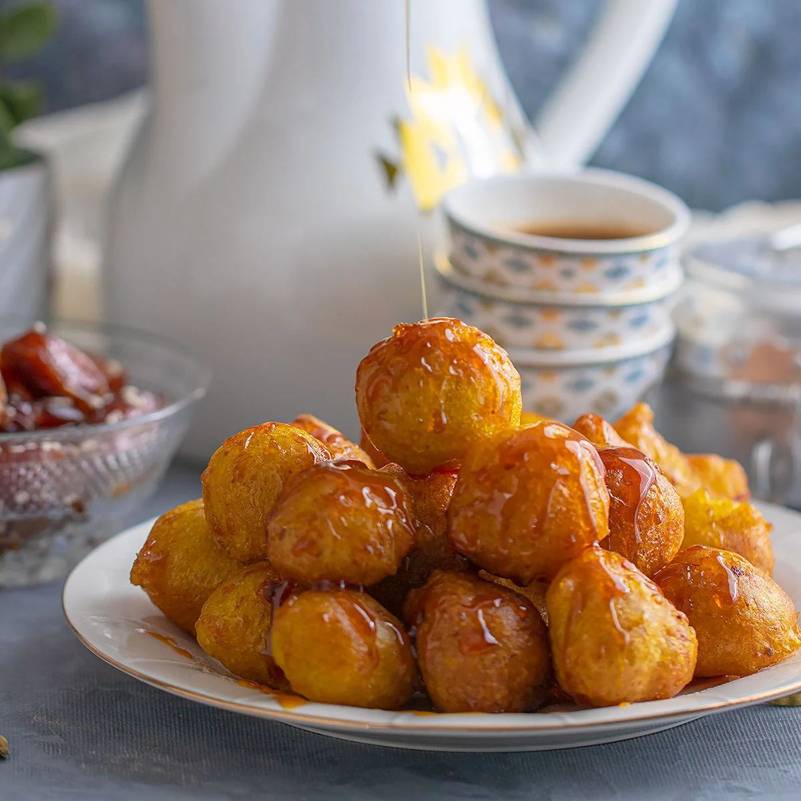

Luqaimat

Luqaimat are delicious Middle Eastern style doughnut balls, also called lokma, lugaimat or awameh (or loukoumades in Greek). They are crisp on the outside, soft and fluffy on the inside, and absolutely delicious drizzled with a homemade sugar syrup
Ingredients
- All Purpose Flour - 1 Cup
- Milk Powder - 1/2 Cup
- Instant Yeast - 1/2 TBSP
- Cardamom Powder - 1/2 TBSP
- Sugar - 2 TBSP
- Lukewarm Water
- Saffron - One Pinch
- Dates Syrup - 1/2 Cup
- Oil
Steps
- Add all-purpose flour, yeast milk powder, sugar, cardamom powder and saffron in a bowl and mix well
- Slowly add water while gently mixing with your hand to get a sticky batter. The batter will be more like a dough than batter. Cover with a muslin cloth and allow to rest for a couple of hours in a warm place till it has doubled in size
- Heat oil and drop the batter by spoonful. (Dipping the spoon in water in between prevents the batter from sticking to the spoon and makes it easier to drop. Alternatively you can drop the batter in a zip lock bag. Cut out the corner of the bag and push to get a small ball of the batter in your hand. Drop this ball immediately in oil. You can dip your hand in water to avoid sticking)
- Roll the dropped balls with a slotted spoon in oil for even cooking. Fry till they are dark golden brown in color. Remove from oi and place on a kitchen towel
- Place them in a serving bowl and pour the date syrup on top, you can sprinkle with sesame seeds. Relish while still warm
Go Back